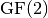
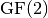
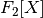

Design Philosophy¶
The core of VBF library is the VBF class which represents Vector Boolean Functions whose data members and member functions make use of the NTL modules listed in Table NTL Modules. However, some new cryptography-related member functions were added to the previous modules. Besides, new modules which are not present in NTL, are defined and they are listed in Table New Modules.
| NTL modules used in VBF | |
|---|---|
| CLASS NAME | DESCRIPTION |
GF2 |
Galois Field of order  denoted by  denoted by  |
vec_GF2 |
Vectors over |
mat_GF2 |
Matrices over |
RR |
Arbitrary-precision floating point numbers |
vec_RR |
Vectors over reals |
mat_RR |
Matrices over reals |
ZZ |
Signed, arbitrary length integers |
vec_ZZ |
Vectors over integers |
mat_ZZ |
Matrices over integers |
GF2X |
Implements polynomial arithmetic modulo 2 |
GF2E |
Polynomials in  modulo a polynomial  |
GF2EX |
Polynomials over |
vec_GF2E |
Vectors over |
Note that the modulus P in may be any polynomial with degree greater than 0, not necessarily irreducible. Objects of the class are represented as a of degree less than the degree of P. can be used, for example, for arithmetic in .
| New modules created for VBF | |
|---|---|
| CLASS NAME | DESCRIPTION |
pol |
Polynomial in ANF of a Boolean Function |
vec_pol |
Polynomials in ANF of a Vector Boolean Function |
The main file in the library, called VBF.h has the definitions of the objects described in the next chapters.